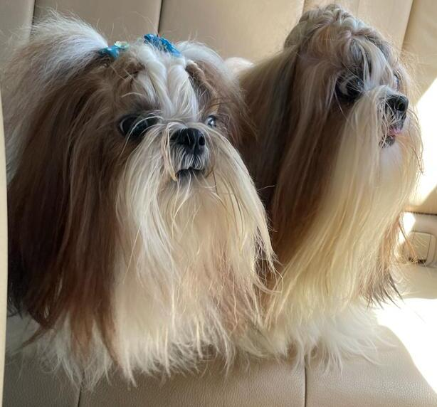

Estos son mis mascotas Coco y Shen-Li

Las mascotas que ganarán tu corazón en un instante
Les gusta dormir, que les hagan mimos, salir a jugar y comer premios
| Sus datos: | Sus comidas favoritas |
|---|---|
Son mascotas de pequeño tamaño pero con mucha personalidad |
Generalmente comen dos veces por día y prefieren comer junto a sus humanos |
Sus paseos favoritos |
Sus pasatiempos favoritos |